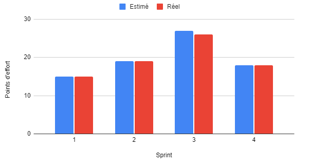

Compétence Réaliser
AC 1 Choisir et implémenter les architectures adaptées
- Acquis
Dans le cadre de mes cours de développement web, j'ai appris à utiliser les technologies du web comme HTML, CSS, JavaScript, PHP, MySQL, etc.
J'ai donc appris à créer des sites web dynamiques en utilisant des architectures adaptées comme le modèle MVC (Modèle-Vue-Contrôleur) par exemple.
Le modèle MVC permet de séparer les données (Modèle), la présentation (Vue) et la logique de contrôle (Contrôleur) pour faciliter la maintenance et l'évolution de l'application.
Nous avons appris à utiliser des frameworks comme Symfony pour faciliter le développement d'applications web en PHP ou Vue.js pour faciliter le développement d'applications web en JavaScript.
Je peux notamment citer les projets NeptuneDive et Stageo qui sont des sites web dynamiques réalisés en utilisant les technologies du web et en respectant les bonnes pratiques de développement ou
encore les differents projet web que nous avons réalisé en cours de développement web cette année.
Référence : Projet NeptuneDive, Projet Stageo
AC 2 Faire évoluer une application existante
- Acquis
Dans le cadre de mes cours de développement web, j'ai appris à faire évoluer une application existante en ajoutant de nouvelles fonctionnalités, en corrigeant des bugs, en améliorant l'interface utilisateur, etc.
J'ai appris à utiliser des outils de versionning comme Git pour gérer les différentes versions de l'application et pour travailler en collaboration avec d'autres développeurs.
J'ai appris à utiliser des outils de gestion de projet comme Trello pour organiser le travail et suivre l'avancement du projet.
Je peux notamment citer le projet TrelloTrolle qui consistait a rependre du code déjà existant et à l'améliorer en ajoutant de nouvelles fonctionnalités et en corrigeant des bugs.
Ainsi que le projet NeptuneDive que nous avons avec le temps fais beaucoup évoluer en ajoutant de nouvelles fonctionnalités et en améliorant l'interface utilisateur.
Référence : Projet NeptuneDive
AC 3 Intégrer des solutions dans un environnement de production
- Acquis
Dans le cadre de mes cours de développement web, j'ai appris à intégrer des solutions dans un environnement de production en utilisant des outils de déploiement comme GitLab CI/CD.
J'ai appris à mettre en place des pipelines de déploiement pour automatiser les tests, la construction et le déploiement de l'application.
J'ai appris à utiliser des outils de déploiement comme Docker pour créer des conteneurs afin de faciliter le déploiement de l'application.
Je peux notamment citer le projet NeptuneDive pour lequel nous avons mis en place un conteneur Docker personnaliser afin de faciliter le déploiement de l'application.
Nous avons aussi vu en cours comment mettre en place un pipeline de déploiement avec GitLab CI/CD pour automatiser les tests, la construction et le déploiement de l'application.
Référence : Projet NeptuneDive
Conifguration CI/CD Gitlab d'un projet de cours

Gérer des données de l'information
AC 1 Mettre à jour et interroger une base de données relationnelle (en requêtes directes ou à travers une application)
- Acquis
Dans le cadre de mes cours de base de données de première année, j'ai appris à utiliser le langage SQL pour interroger une base de données relationnelle. J'ai donc appris à faire des requêtes avec SELECT, INSERT, UPDATE, DELETE, JOIN, GROUP BY, ORDER BY, etc. Ainsi que des requêtes plus complexes avec des sous-requêtes avec notemment la division.
AC 2 Assurer la confidentialité des données (intégrité et sécurité)
- Acquis
Pour assurer la confidentialité des données, il est important de mettre en place des mécanismes de sécurité comme les vues, les triggers, les procédures stockées, les rôles, les privilèges, etc. Les vues permettent de masquer certaines données, en donnant accès à une partie des données seulement. Les triggers permettent de déclencher des actions en fonction d'événements, par exemple, on peut déclencher une action avant ou après une insertion, une modification ou une suppression de données. Les procédures stockées permettent de regrouper des actions à effectuer avant d'inserer des données par exemple, dans ce cas on peut vérifier que les données sont correctes et respectent certaines conditions avant de les insérer dans la base de données.
Conduire un projet
AC 2 Formaliser les besoins du client et de l'utilisateur
- Acquis
Pour formaliser les besoins du client et de l'utilisateur, il est important de bien comprendre les besoins et les attentes du client et de l'utilisateur. Pour cela, il faut poser des questions en faisant des entretiens ou par mail, pour bien comprendre les besoins et les attentes du client et de l'utilisateur. Une fois que les besoins sont bien compris, il faut les formaliser en rédigeant un cahier des charges qui contient les besoins fonctionnels et non-fonctionnels. Dans le cadre de la SAE du semestre 3, nous avons utiliser la méthode agile Scrum pour gérer notre projet. Nous avons donc rédigé un backlog de produit qui contient les besoins fonctionnels et non-fonctionnels appelés user stories.
AC 2 Mettre en place les outils de gestion de projet
- Acquis
Afin de mettre en place une bonne gestion de projet, il est important de mettre en place des diagrammes tel que'un diagramme de Gantt ou un diagramme de Pert. Le diagramme de Gantt permet de visualiser les tâches à réaliser, les dépendances entre les tâches, les dates de début et de fin des tâches, les ressources nécessaires, etc. Le diagramme de PERT permet d'identifier les potentielles connexions entre toutes les tâches d'un même projet. Il est utile lorsque les activités peuvent être menées en parallèle plutôt qu'en séquence.
AC 4 Définir et mettre en œuvre une démarche de suivi de projet
- Acquis
Lors de la SAE du semestre 3, nous avons mis en place une démarche de suivi de projet en utilisant la méthode agile Scrum et à plusieurs outils de gestion de projet comme Trello, GitLab, etc. Nous avons donc défini des sprints de 2 semaines, avec des réunions de planification, de revue et de rétrospective à la fin de chaque sprint. Nous avons mis en place un graphique de burndown pour suivre l'avancement du projet et un graphique de velocity pour suivre la vélocité de l'équipe.
Graphique de vélocité